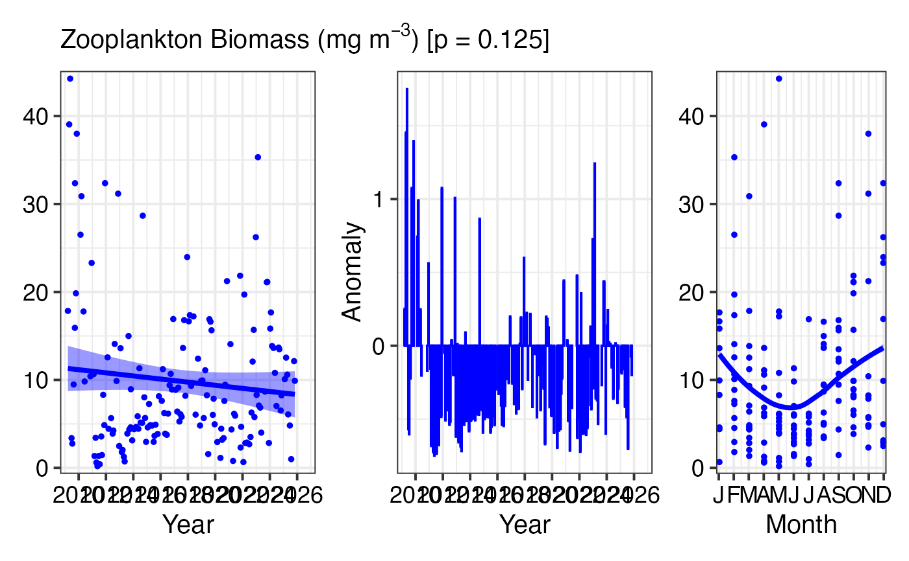
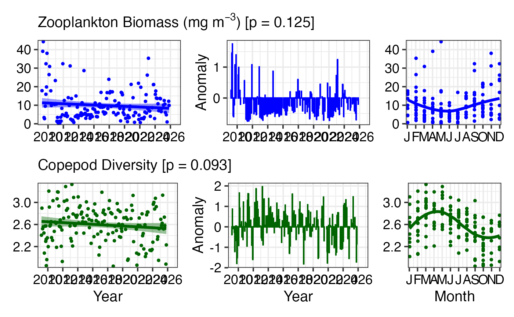
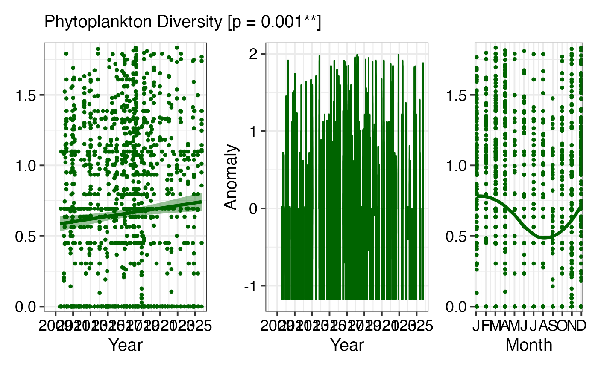

Create a three-panel figure showing Essential Ocean Variables over time, including the raw time series, anomalies, and climatology. This format is designed for scientific reporting and State of Environment assessments.
Arguments
- df
A dataframe from
pr_get_EOVs()containing Essential Ocean Variable data- EOV
The Essential Ocean Variable parameter to plot (must match a parameter in df)
- trans
Transformation for the y-axis scale:
"identity"- No transformation (default)"log10"- Log base 10 transformation"sqrt"- Square root transformation
- col
Colour for the time series line and points (e.g.,
"blue","darkred","#FF5733")- labels
Logical. Should x-axis labels be shown? Set to
FALSEwhen combining multiple plots vertically to save space.
Details
Essential Ocean Variables (EOVs) are key measurements identified by the Global Ocean Observing System (GOOS) as critical for understanding ocean health and change. For plankton, the two primary EOVs are:
Biomass - Total plankton biomass (proxy for ecosystem productivity)
Diversity - Species richness and diversity (proxy for ecosystem health)
This function creates a three-panel figure:
Panel 1: Time Series
Shows the raw data over time with a smoothed trend line (LOESS). Useful for identifying long-term trends and interannual variability.
Panel 2: Anomalies
Shows deviations from the long-term mean, highlighting periods of unusually high (positive anomalies) or low (negative anomalies) values. Anomalies are calculated by subtracting the overall mean from each observation.
Panel 3: Climatology
Shows the monthly climatology (mean ± standard error), revealing the typical seasonal cycle. Useful for understanding natural seasonal variability.
The function automatically handles NRS station data and CPR bioregion data, detecting which type is present in the input dataframe.
See also
pr_get_EOVs() for preparing the input data,
pr_remove_outliers() for outlier removal before plotting,
pr_get_coeffs() for extracting trend coefficients
Examples
# Plot zooplankton biomass EOV for Port Hacking
df <- pr_get_EOVs("NRS") %>%
dplyr::filter(StationCode == "PHB") %>%
pr_remove_outliers(2)
pr_plot_EOVs(df, EOV = "Biomass_mgm3", trans = "identity", col = "blue")

# Stack multiple EOVs by removing x-axis labels on upper panels
library(patchwork)
p1 <- pr_plot_EOVs(df, EOV = "Biomass_mgm3", col = "blue", labels = FALSE)
p2 <- pr_plot_EOVs(df, EOV = "ShannonCopepodDiversity", col = "darkgreen")
p1 / p2

# Plot phytoplankton diversity for CPR South-east bioregion
df_cpr <- pr_get_EOVs("CPR") %>%
dplyr::filter(BioRegion == "South-east") %>%
pr_remove_outliers(2)
pr_plot_EOVs(df_cpr, EOV = "ShannonPhytoDiversity",
trans = "identity", col = "darkgreen")
